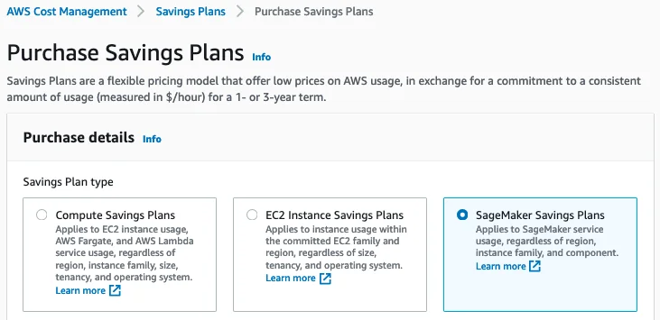
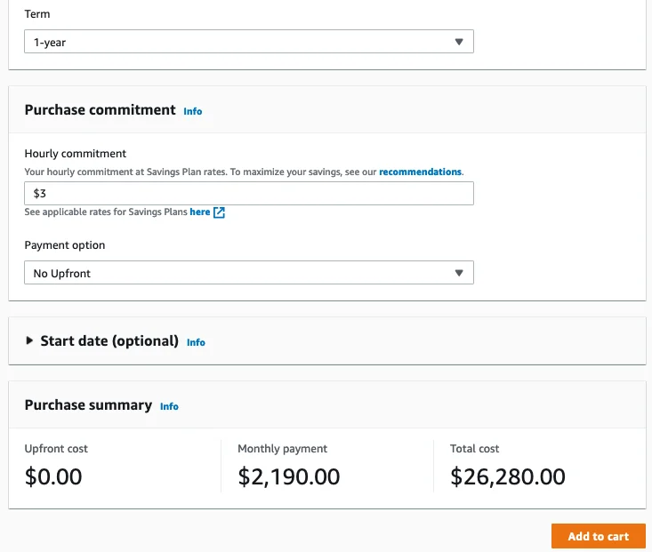

Published: 2021-04-20 | Originally published at AWS Blog
Launched at AWS re:Invent 2017, Amazon SageMaker is a fully-managed service that has already helped tens of thousands of customers quickly build and deploy their machine learning (ML) workflows on AWS.
To help them get the most ML bang for their buck, we’ve added a string of cost-optimization services and capabilities, such as Managed Spot Training, Multi-Model Endpoints, Amazon Elastic Inference, and AWS Inferentia. In fact, customers find that the Total Cost of Ownership (TCO) for SageMaker over a three-year horizon is 54% lower compared to other cloud-based options, such as self-managed Amazon EC2 and AWS-managed Amazon EKS.
Since there’s nothing we like more than making customers happy by saving them money, I’m delighted to announce:
Reducing Instance Prices in Amazon SageMaker
Effective today, we are dropping the price of several instance families in Amazon SageMaker by up to 14.2%.
This applies to:
Detailed pricing information is available on the Amazon SageMaker pricing page .
As welcome as price reductions are, many customers have also asked us for a simple and flexible way to optimize SageMaker costs for all instance-related activities, from data preparation to model training to model deployment. In fact, as a lot of customers are already optimizing their compute costs with Savings Plans , they told us that they’d love to do the same for their Amazon SageMaker costs.
Introducing SageMaker Savings Plans
Savings Plans for AWS Compute Services were
launched
in November 2019 to help customers optimize their compute costs. They offer up to 72% savings over the on-demand price, in exchange for your commitment to use a specific amount of compute power (measured in $ per hour) for a one- or three-year period. In the spirit of self-service, you have full control on setting up your plans, thanks to
recommendations
based on your past consumption, to
usage reports
, and to budget coverage and utilization alerts.
SageMaker Savings Plans follow in these footsteps, and you can create plans that cover ML workloads based on:
Savings Plans don’t distinguish between instance families, instance types, or AWS regions. This makes it easy for you to maximize savings regardless of how your use cases and consumption evolve over time, and you can save up to 64% compared to the on-demand price.
For example, you could start with small instances in order to experiment with different algorithms on a fraction of your dataset. Then, you could move on to preparing data and training at scale with larger instances on your full dataset. Finally, you could deploy your models in several AWS regions to serve low-latency predictions to your users. All these activities would be covered by the same Savings Plan, without any management required on your side.
Understanding Savings Plans Recommendations
Savings Plans provides you with recommendations that make it easy to find the right plan. These recommendations are based on:
Instantly, you’ll see what your optimized spend would be, and how much you could start saving per month. Savings Plans also suggest an hourly commitment that maximizes your savings. Of course, you’re completely free to use a different commitment, starting as low as $0.001 per hour!
Once you’ve made up your mind, you can add the plan to your cart, submit it, and start enjoying your savings.
Now, let’s do a quick demo, and see how I could optimize my own SageMaker spend.
Recommending Savings Plans for Amazon SageMaker
Opening the
AWS Cost Management Console
, I see a Savings Plans menu on the left.
Clicking on Recommendations , I select SageMaker Savings Plans .
Looking at the available options, I select Payer to optimize cost at the Organizations level, a 1-year term, a No upfront payment, and 7 days of past usage (as I’ve just ramped up my SageMaker usage).
Immediately, I see that I could reduce my SageMaker costs by 20% , saving $897.63 every month. This would only require a 1-year commitment of $3.804 per hour.
The monthly charge on my AWS bill would be $2,776 ($3.804 * 24 hours * 365 days / 12 months), plus any additional on-demand costs should my actual usage exceed the commitment. Pretty tempting, especially with no upfront required at all.
Moving to a 3-year plan (still no upfront), I could save $1,790.19 per month, and enjoy 41% savings thanks to a $2.765 per hour commitment.
I could add this plan to the cart as is, and complete my purchase. Every month for 3 years, I would be charged $2,018 ($2.765 * 24 * 365 / 12), plus additional on-demand cost.
As mentioned earlier, I can also create my own plan in just a few clicks. Let me show you how.
Creating Savings Plans for Amazon SageMaker
In the left-hand menu, I click on
Purchase Savings Plans
and I select
SageMaker Savings Plans
.

I pick a 1-year term without any upfront. As I expect to rationalize my SageMaker usage a bit in the coming months, I go for a commitment of $3 per hour, instead of the $3.804 recommendation. Then, I add the plan to the cart.

Confirming that I’m fine with an optimized monthly payment of $2,190 , I submit my order.
The plan is now active, and I’ll see the savings on my next AWS bill. Thanks to utilization reports available in the Savings Plans console, I’ll also see the percentage of my commitment that I’ve actually used. Likewise, coverage reports will show me how much of my eligible spend has been covered by the plan.
Getting Started
Thanks to price reductions for CPU and GPU instances and to SageMaker Savings Plans, you can now further optimize your SageMaker costs in an easy and predictable way. ML on AWS has never been more cost effective.
Price reductions and SageMaker Savings Plans are available today in the following AWS regions:
Give them a try , and let us know what you think. As always, we’re looking forward to your feedback. You can send it to your usual AWS Support contacts, or on the AWS Forum for Amazon SageMaker.
- Julien
Julien is the Artificial Intelligence & Machine Learning Evangelist for EMEA . He focuses on helping developers and enterprises bring their ideas to life. In his spare time, he reads the works of JRR Tolkien again and again.
{kind=link}
{kind=link}
{kind=link}
{kind=link}
{kind=link}
{kind=link}